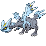

📖 英語版の図鑑説明
It appears that this Pokémon uses its powers over ice to freeze its own body in order to stabilize its cellular structure.
日本語訳
氷の力で自らの体を凍らせ、細胞構造を安定させていると考えられる。
📝 この図鑑文に出てくる英単語
| 英単語 | 意味 | 品詞 | レベル |
|---|---|---|---|
| appears | 現れる | 動詞 | 中3 |
| powers | 力(複数形) | 名詞 | 中2 |
| freeze | 凍る、凍らせる | 動詞 | 中3 |
| order | 命令、順番 | 名詞 | 中2 |
| stabilize | 安定させる | 動詞 | 大学 |
| cellular | 細胞の | 形容詞 | 大学 |
| structure | 構造 | 名詞 | 高校 |
文法ポイント in order to stabilize は「〜するために」と目的を表す言い方です。to だけより目的がはっきりします。
💡 英語名「Kyurem」の由来
英語名「Kyurem」は、日本語名「キュレム」をもとに、レシラム（Reshiram）の最後の「ram」と響きをそろえた名前と考えられている。
出典 Bulbapedia
📊 キュレムの種族値
HP125
こうげき130
ぼうぎょ90
とくこう130
とくぼう90
すばやさ95
合計 660
❓ よくある質問
- キュレムの英語名は？
- キュレムの英語名は「Kyurem」です。
- キュレムの英語名「Kyurem」の由来は？
- 英語名「Kyurem」は、日本語名「キュレム」をもとに、レシラム（Reshiram）の最後の「ram」と響きをそろえた名前と考えられている。
- キュレムは英語版の図鑑でどう説明されている？
- 「It appears that this Pokémon uses its powers over ice to freeze its own body in order to stabilize its cellular structure.」と書かれています。日本語にすると「氷の力で自らの体を凍らせ、細胞構造を安定させていると考えられる。」という意味です。
キュレムは第5世代（イッシュ地方）のポケモンです。第5世代（イッシュ地方）の英語名一覧 →